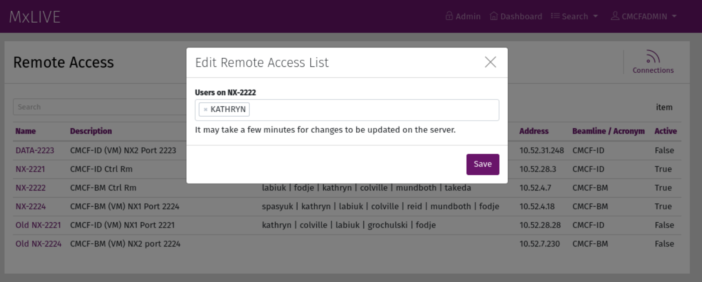

Dashboard¶
In this documentation “staff” refers to accounts marked as having superuser status in the Django administration site (under Project Accounts). Staff are automatically directed to the staff dashboard upon logging in. This is the hub for all administrative tasks that are typically completed by beamline staff. MxLIVE is developed with the assumption that there is only one staff account at any one time; however, multiple staff accounts are allowed. In the case that there are multiple staff, the profile of the account that was created first will be referenced for shipping labels.

Screenshot of the MxLIVE Staff Dashboard¶
The staff dashboard has a similar layout to the user dashboard, with some notable differences.
Menu: Provides access to the Django administration site
Profile: The staff profile information is used as the beamline address for shipping labels provided to users.
Beamlines: Staff have access to beamlines on the left side of the page.
Shipments: All incoming (Sent) and On-site shipments are listed in this area. Sent shipments can be received directly from the dashboard with the “Receive” icon.
Sessions: Active sessions are listed in this area. Active sessions are those where the user is currently running MxDC on the beamline.
Toolbar provides access to:
Remote Connections
Accounts
Sessions Detailed List
Schedule
Publications
Add new User Guide entries
Guide¶
Create announcements that will be available on every user’s dashboard, in the User Guide area. Assign priorities to your announcements to control the order in which they are presented.
Announcements marked “staff only” will only show up on the staff dashboard.
To add a YouTube video, enter “youtube:{video_id}” as the URL or Resource.
To add an image from Flickr, enter “flickr:{album}:{photo}” as the URL or Resource.

Remote Connections¶
Remote Connections in MxLIVE are tailored to provide a list of allowed users to a remote service through an API. Scripts for accessing the API for NoMachine Servers and SSH Servers are provided. A history of remote connections can be viewed using the “Connections” icon in the toolbar.
Users who should be granted access to a remote server are added to the list of a specific remote connection, which they can then connect to through the NoMachine Client or SSH, depending on the configuration of the server.
For MxLIVE instances taking advantage of the scheduling app, users who are assigned beamtime with an access mode marked as ‘Remote’ are automatically added to the remote access lists for the appropriate beamline. Their access begins at the start of their beamtime and ends half of a shift after the end of their beamtime. This provides a buffer for users to complete data analysis and transfer, if necessary.
NoMachine Server¶
A python script deploy/nxupdate.py is set to run on each NoMachine Server periodically to fetch the new user list from MxLIVE. A history of connection times and statuses as reported by nxserver –history is sent back to MxLIVE.
SSH Server¶
A python script deploy/sshupdate.py is set to run on each SSH server periodically to fetch the new user list from MxLIVE. A history of connection times and statuses as reported by last -Rw –time-format iso is sent back to MxLIVE.
Accounts¶
When creating a new account, enter the First Name, Last Name, and Email Address of the owner of the account (ie. the Principal Investigator, Project Leader, etc.). These fields are not editable by the user, but they are used, along with the Contact Email (which IS editable by the user), for email notifications about upcoming beamtime.

The Project Type is used for calculating beamline statistics.
Project Designations can be used for any designation staff require. Once a Project Designation has been created through the Django administration site, it will become available to select when editing a user’s profile. As an example, CMCF assigns a CRC designation to Canada Research Chairs, and a BeamTeam designation to Beam team members. Lists of Accounts and Sessions can then be filtered by those designations when gathering statistics.
If a value is entered for the Alias, it is used as the display name on publicly visible schedules instead of the account’s username. This is to provide extra confidentiality to users for whom it is required, or to customize the schedule display.
Note
Staff are able to see both the alias and the username on the staff schedule.
The toolbar of an account page gives access to:
filtered lists of datasets, reports, and sessions associated with the account,
shipping labels for returning items to the user,
reset the user’s API key used for secure integration with MxDC.
If the key stored locally in a user’s directory is somehow altered or deleted, integration with MxDC will result in errors. Further, a new key cannot be sent from MxDC because the new key will not match the key in MxLIVE. To remedy this problem, the MxLIVE API key should be reset, at which point MxDC can update the account with a new key.

Detailed Lists¶
Staff detailed lists are similar to user detailed lists, but staff lists contain entries from all users. For this reason, a column is prepended to staff lists containing the username of the owner of each item.
Note
Staff do not have access to any item in a Draft state (for example, shipments that have not yet been sent).